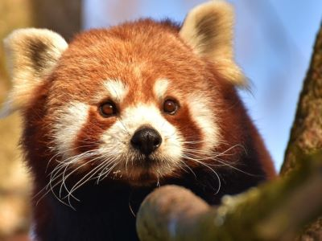
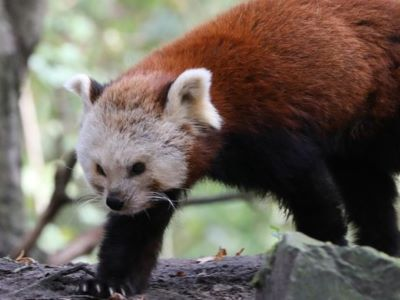

Chinese Red Panda
(Ailurus Fulgens Styani)
Photo of the Chinese Red Panda, native to southwestern China
Himalayan Red Panda
(Ailurus fulgens)
Photo of Himalayan red panda, native to eastern Himalayas
Snow Leopard
(Panthera Uncia)

Photo of the Snow Leopard, native to Central and south Asian mountain ranges
Golden Pheasant
(Chrysolophus Pictus)

Photo of the Golden Pheasant, native to western China mountain ranges
Golden Snub-Nosed Monkey
(Rhinopithecus Roxellana)

Photo of the Golden Snub-Nosed Monkey, native to south western China mountain ranges
Giant Panda
(Ailuropoda Melanoleuca)

Photo of the Giant Panda, native to south Central China
Red Whiskered Bulbul
(Pycnonotus Jocosus)

Photo of the Red Whiskered Bulbul, native to India and Burma
Japaneses Dwarf Flying Squirrel
(Pteromys Momonga)

Photo of the Japanese dwarf flying squirrel, native to Honshu, Kyushu, and Shikoku Japan
Indian Star Tortoise
(Geochelone Elegans)

Photo of the Indian Star Tortoise, native to India, Sri Lanka, and Pakistan
Pallas's Cat
(Otocolobus Manul)

Photo of the Pallas's cat, native to most of Central Asia
Long Tailed Macaque
(Macaca Fascicularis)

Photo of the Long Tailed Macaque, native to Southeast Asia and Mainland Asia
Hokkaido Sika Deer
(Cervus Nippon Yesoensis)

Photo of the Hokkaido sika deer, native to much of east Asia